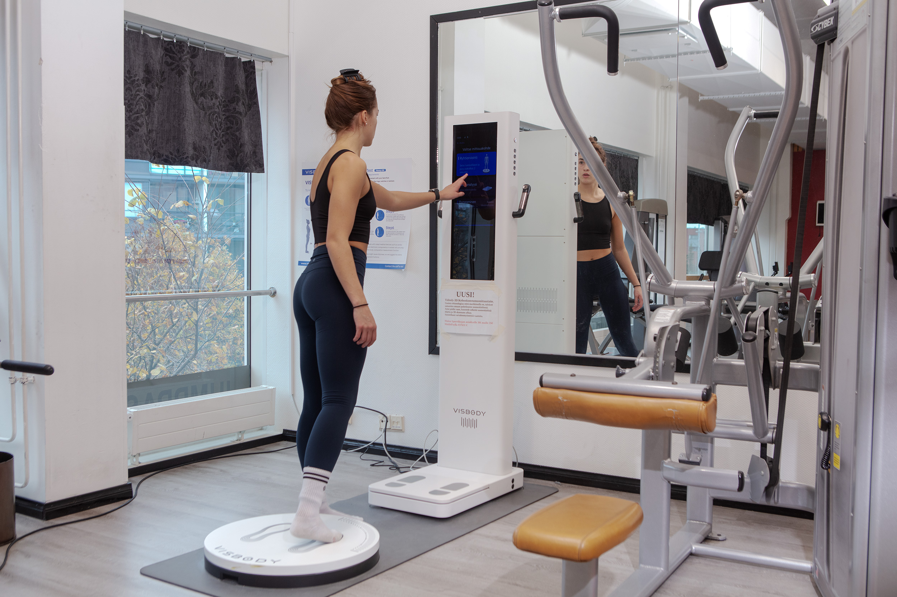

<!-- OSA 2: TARJOUKSET -->
  <section class="py-16 sm:py-20 border-b border-brand-border bg-brand-black">
    <div class="max-w-6xl mx-auto px-4 sm:px-6">
      <div class="grid grid-cols-1 lg:grid-cols-12 gap-10 items-center">
        <div class="lg:col-span-6 relative rounded-2xl overflow-hidden border border-brand-border shadow-xl group">
          
          <div class="absolute inset-0 bg-gradient-to-t from-black/80 via-transparent to-transparent"></div>
        </div>

        <div class="lg:col-span-6 space-y-6">
          <h2 class="font-heading font-extrabold text-2xl sm:text-3xl text-white tracking-tight uppercase">
            TARJOUKSET
          </h2>
          
          <p class="text-sm sm:text-base text-slate-200 font-semibold leading-relaxed">
            Visbody 3D-kehonkoostumusmittaus
          </p>
        </div>
      </div>
    </div>
  </section>
